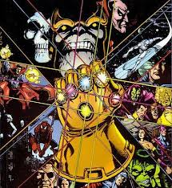
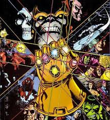

Las Gemas del infinito y el Guante
10
Las Gemas del infinito o también llamadas las Gemas del Alma son seis gemas que aparecen en los cómics de Marvel. Originalmente conocidas como Gemas del Alma, estas gemas tienen consciencia propia1 y hubo un tiempo en el que pudieron usarse al unísono para hacer a su portador omnipotente y con control absoluto sobre todo el universo

Gema de la mente Gema del alma Gema de la realida Gema del tiempo Gema del Espacio Gema del poder
Esta gema tiene el poder para aumentar hasta límites insospechados las capacidades psíquicas, pudiendo lanzar grandes ataques o rayos psíquicos o leer mentes sin apenas defensas psíquicas o aumentar las propias
Sus poderes son la capacidad de absorber las almas de las personas. Estas almas, residen dentro de la gema, donde hay un paraíso.
Es la gema más poderosa y la más peligrosa si se usa incorrectamente. Esta gema tiene el poder de moldear la realidad, concediendo deseos materiales, yendo en contra de las leyes físicas.
Esta gema puede dar a su poseedor la facultad de controlar el tiempo. Esto da lugar a la creación de portales temporales por los que se pueden colar personas y perderse en el tiempo, poder retroceder o adelantar en el tiempo o repeler algunos ataques, tanto físicos volviendo atrás en el tiempo y evitándolos como temporales
control sobre el espacio y hacer viajes espaciales. Esto dota al poseedor de viajar a través del espacio, pero no del tiempo, por lo que es necesaria la Gema-Tiempo para hacer viajes espacio-temporales.
da a su portador la capacidad de poseer cualquier habilidad sobrehumana, aumentar su resistencia y fuerza física y de controlar mucha energía y lanzarla como rayos o ráfagas. Esta gema le fue dada a Drax, que se la tragó y para volver a crear el guantelete solo la escupió cuando Gamora le dio una certera patada en el estómago.
El guenate del infinito

El guantelete infinito está constituido por seis gemas llamadas la gemas del infinito las cuales son : poder, tiempo, alma, realidad, mente, y espacio.
10
Las Gemas del infinito o también llamadas las Gemas del Alma son seis gemas que aparecen en los cómics de Marvel. Originalmente conocidas como Gemas del Alma, estas gemas tienen consciencia propia1 y hubo un tiempo en el que pudieron usarse al unísono para hacer a su portador omnipotente y con control absoluto sobre todo el universo

Gema de la mente Gema del alma Gema de la realida Gema del tiempo Gema del Espacio Gema del poder
Esta gema tiene el poder para aumentar hasta límites insospechados las capacidades psíquicas, pudiendo lanzar grandes ataques o rayos psíquicos o leer mentes sin apenas defensas psíquicas o aumentar las propias
Sus poderes son la capacidad de absorber las almas de las personas. Estas almas, residen dentro de la gema, donde hay un paraíso.
Es la gema más poderosa y la más peligrosa si se usa incorrectamente. Esta gema tiene el poder de moldear la realidad, concediendo deseos materiales, yendo en contra de las leyes físicas.
Esta gema puede dar a su poseedor la facultad de controlar el tiempo. Esto da lugar a la creación de portales temporales por los que se pueden colar personas y perderse en el tiempo, poder retroceder o adelantar en el tiempo o repeler algunos ataques, tanto físicos volviendo atrás en el tiempo y evitándolos como temporales
control sobre el espacio y hacer viajes espaciales. Esto dota al poseedor de viajar a través del espacio, pero no del tiempo, por lo que es necesaria la Gema-Tiempo para hacer viajes espacio-temporales.
da a su portador la capacidad de poseer cualquier habilidad sobrehumana, aumentar su resistencia y fuerza física y de controlar mucha energía y lanzarla como rayos o ráfagas. Esta gema le fue dada a Drax, que se la tragó y para volver a crear el guantelete solo la escupió cuando Gamora le dio una certera patada en el estómago.
El guenate del infinito
El guantelete infinito está constituido por seis gemas llamadas la gemas del infinito las cuales son : poder, tiempo, alma, realidad, mente, y espacio.
| Gema de la mente | Gema del alma | Gema de la realida | Gema del tiempo | Gema del Espacio | Gema del poder |
| Esta gema tiene el poder para aumentar hasta límites insospechados las capacidades psíquicas, pudiendo lanzar grandes ataques o rayos psíquicos o leer mentes sin apenas defensas psíquicas o aumentar las propias | Sus poderes son la capacidad de absorber las almas de las personas. Estas almas, residen dentro de la gema, donde hay un paraíso. | Es la gema más poderosa y la más peligrosa si se usa incorrectamente. Esta gema tiene el poder de moldear la realidad, concediendo deseos materiales, yendo en contra de las leyes físicas. | Esta gema puede dar a su poseedor la facultad de controlar el tiempo. Esto da lugar a la creación de portales temporales por los que se pueden colar personas y perderse en el tiempo, poder retroceder o adelantar en el tiempo o repeler algunos ataques, tanto físicos volviendo atrás en el tiempo y evitándolos como temporales | control sobre el espacio y hacer viajes espaciales. Esto dota al poseedor de viajar a través del espacio, pero no del tiempo, por lo que es necesaria la Gema-Tiempo para hacer viajes espacio-temporales. | da a su portador la capacidad de poseer cualquier habilidad sobrehumana, aumentar su resistencia y fuerza física y de controlar mucha energía y lanzarla como rayos o ráfagas. Esta gema le fue dada a Drax, que se la tragó y para volver a crear el guantelete solo la escupió cuando Gamora le dio una certera patada en el estómago. |